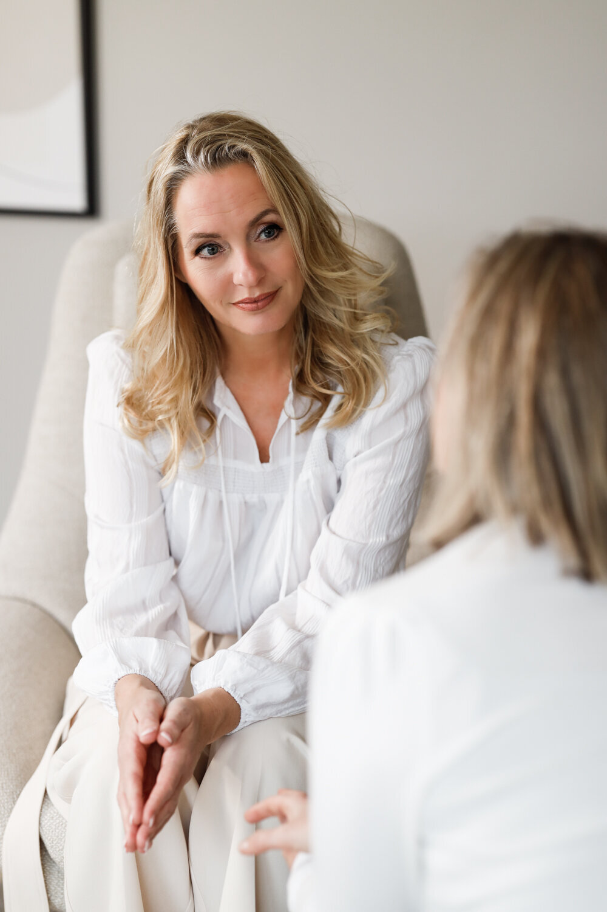
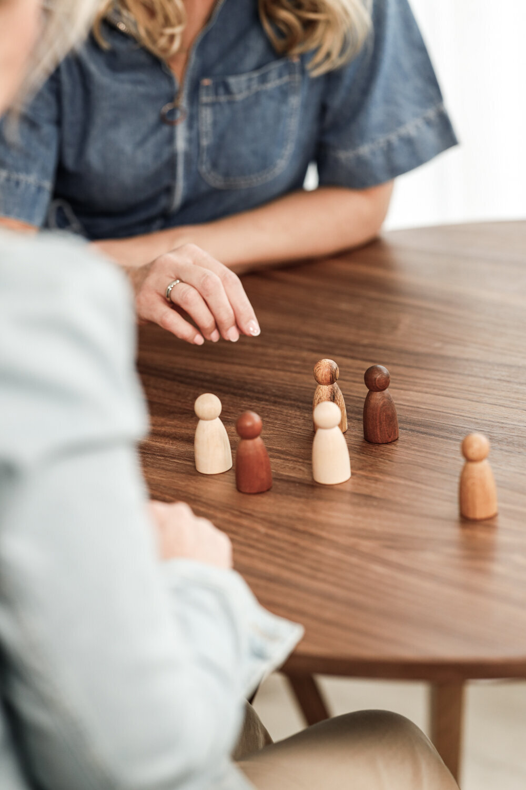
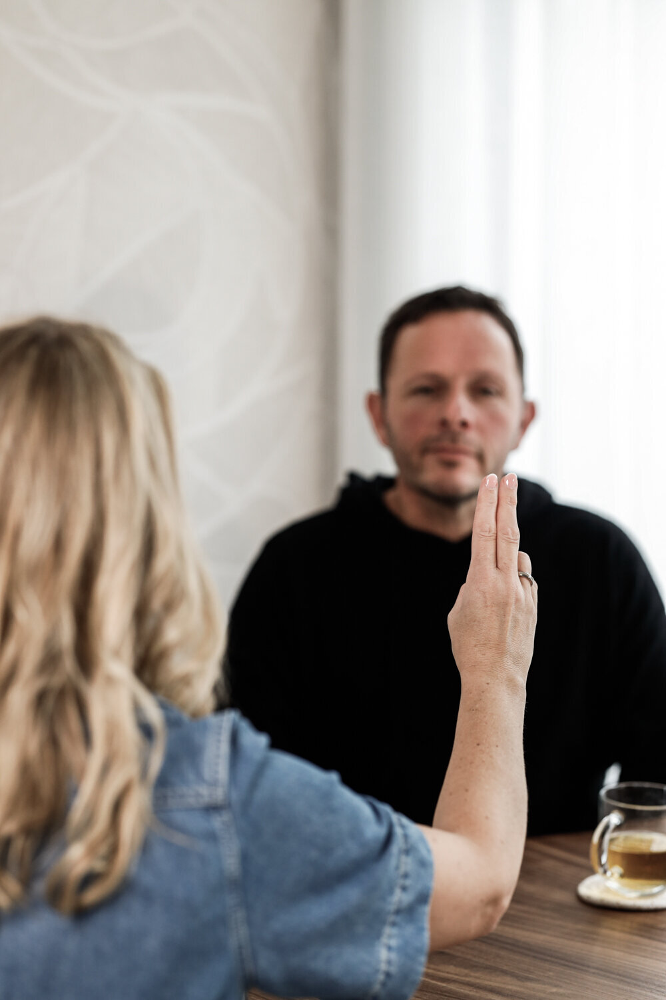
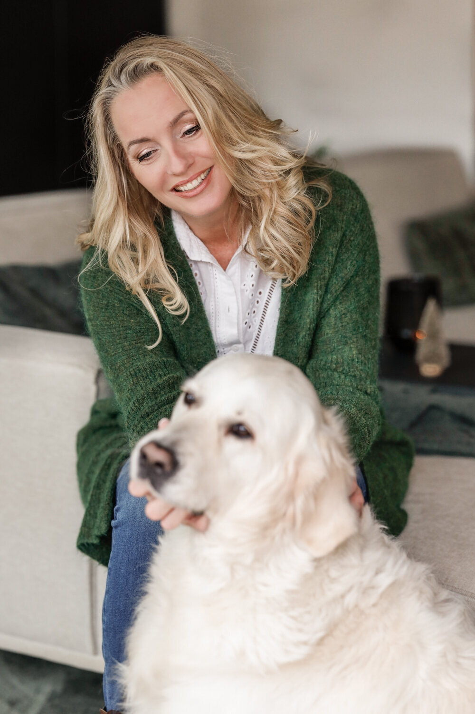

Coaching
Transformatieve coaching en therapie. Je wordt wie je écht bent en wilt zijn.
€ 85 · 60 minMeer info

Professionele coaching en therapie in Terheijden, bij Breda. Een plek waar je er mag zijn met alles wat er is. Begin met een gratis kennismaking.
Vanaf het moment dat ik bij Anita binnenkwam, voelde ik me meteen op mijn gemak.Doris
Je praat eens met een vriend. Lucht je hart bij familie. En tóch voel je dat dat nu niet genoeg is. Je wilt echt iets veranderen. Blijvend.
Bij De Lage Linie kun je terecht voor transformatieve coaching, hypnotherapie, systeemtherapie en EMDR. Altijd persoonlijk, met de aanpak die bij jou past. Maskers af, muurtjes weg (en dat hoeft echt niet de eerste keer).
Geen verwijzing van de huisarts nodig, en op dit moment geen wachtlijst.
Samen ontdekken we welke vorm het beste bij jou past. Klik op een behandeling voor meer uitleg.
Transformatieve coaching en therapie. Je wordt wie je écht bent en wilt zijn.
In diepe ontspanning ontdekken waar gevoelens en patronen vandaan komen.

Patronen in je familie en relaties zien, begrijpen en doorbreken.

Nare ervaringen en herinneringen op een gezonde manier verwerken.
Dat hoeft ook niet. In de gratis kennismaking van 30 tot 45 minuten bespreken we je hulpvraag en kijken we samen wat het beste bij jou past.
Soms voel je in no time een klik met iemand, een andere keer denk je: dit is het niet. Daarom begint het altijd met kennismaken.
30 tot 45 minuten, in de praktijk. We bespreken waar je mee zit en wat je wilt veranderen. Kosteloos, zodat jij rustig kunt beslissen.
We kiezen de vorm die bij jou past: coaching, hypnotherapie, systeemtherapie of EMDR. Of een combinatie.
Meestal om de twee weken een sessie, in het begin soms vaker. Op zaterdagochtend kan ook.
"Ik voelde me meteen op mijn gemak"
"Vanaf het moment dat ik bij Anita binnenkwam, voelde ik me meteen op mijn gemak. Ze is empathisch, betrokken en komt heel rustig over. Dat gaf me vertrouwen."
"Anita was voor mij een belangrijke en waardevolle steun"
"Tijdens een moeilijke periode vond ik steun bij Anita. De gesprekken en haar reflecties brachten nieuwe inzichten. Ze gaf me praktische oefeningen en adviezen om meer in verbinding met mijn gevoel te komen. Anita was voor mij een belangrijke en waardevolle steun."
"Haar deskundigheid en warme houding hebben een groot verschil gemaakt"
"Anita voelt goed aan wat nodig is, dit in een sfeer waarin je je echt gehoord voelt. Haar deskundigheid en warme houding hebben een groot verschil voor mij gemaakt. Ik heb mij heel welkom gevoeld"
"Anita heeft mij heel goed geholpen bij vraagstukken in mijn leven"
"Anita is een lieve, toegankelijke vrouw, die mij met haar sterke intuïtie heel goed geholpen heeft bij vraagstukken in mijn leven. Mocht ik in de toekomst nog eens hulp kunnen gebruiken, dan maak ik graag weer een afspraak met haar."
"Het heeft me geholpen om weer in contact te komen met mijn gevoel"
"De familieopstelling was echt een bijzondere ervaring. Het was alsof ik op een afstandje naar mijn eigen leven kon kijken, waardoor ik zoveel inzichten kreeg. Wat de representanten lieten zien was treffend, herkenbaar en raakte me diep. Het heeft me geholpen om weer in contact te komen met mijn gevoel, iets dat ik al lange tijd kwijt was."

"Iemand zei eens: je kan mensen prikkelen en op een rustige manier energie geven. Daar herken ik me wel in."
Ik ben Anita den Breejen. Na een carrière in de financiële dienstverlening, waarvan vijf jaar als vertrouwenspersoon, koos ik voor een nieuwe weg. Sinds 2024 heb ik mijn eigen praktijk in Terheijden, vlakbij Breda.
Ik sta bekend als gevoelsmens: iemand die snel tot de kern komt. Dat doe ik door je vertrouwen te geven, maar ook door je te spiegelen op een manier die jou in je waarde laat. Mijn diploma's en bijscholing zijn de stevige basis, mijn intuïtie vult dat aan.
Een linie is een verdedigingswerk. Een mechanisme dat we in onze jeugd ontwikkelen. Het werkt heel lang heel goed, tot dat niet meer zo is. Dan hoop ik dat De Lage Linie een toegankelijke stap is in je ontwikkeling.
"In de lage linie van zelfbehoud ontstaat ruimte voor innerlijke groei, veerkracht en persoonlijke ontwikkeling."
Alle behandelingen zijn vrijgesteld van btw. De kennismaking is altijd gratis.
Consulten worden niet vergoed door de zorgverzekeraar. Veel werkgevers hebben wel een budget voor persoonlijke ontwikkeling of verzuimpreventie. Vraag gerust na wat er bij jou kan.
Op zaterdagochtend kun je ook terecht, met een toeslag van € 10,00.
Bel minimaal 48 uur van tevoren af, dan verplaatsen we de sessie. Bij later afzeggen wordt het tarief in rekening gebracht.
Plan direct een gratis kennismaking, of stuur een berichtje. Ik neem binnen 3 werkdagen contact met je op.
30 tot 45 minuten in de praktijk. Je zit nergens aan vast.